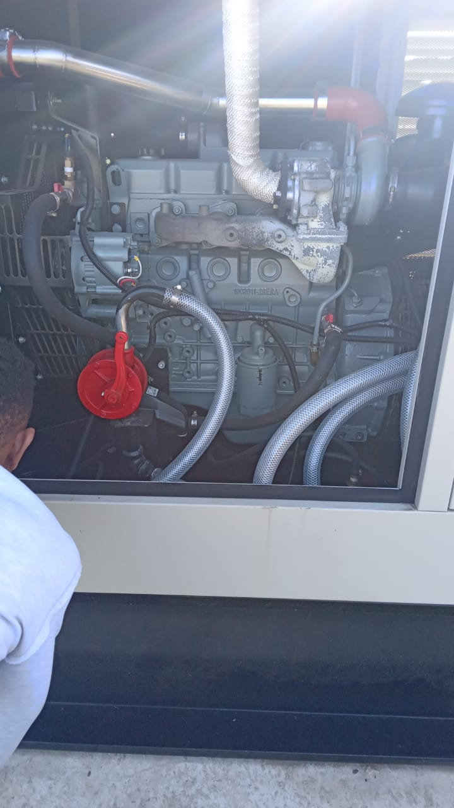

Electrical Maintenance
Regular maintenance is the key to ensuring the longevity, safety, and efficiency of your electrical systems. At Motsosy Trading, our preventative maintenance services are designed to identify potential issues before they become costly problems.
Our Maintenance Services Include:
- Inspection and testing of electrical panels and wiring
- Upkeep of circuit boards and power distribution systems
- Servicing of lighting fixtures and switches
- Energy efficiency audits to reduce power consumption
With over a decade of experience, we ensure your electrical systems are in peak condition, providing you peace of mind and uninterrupted power.
